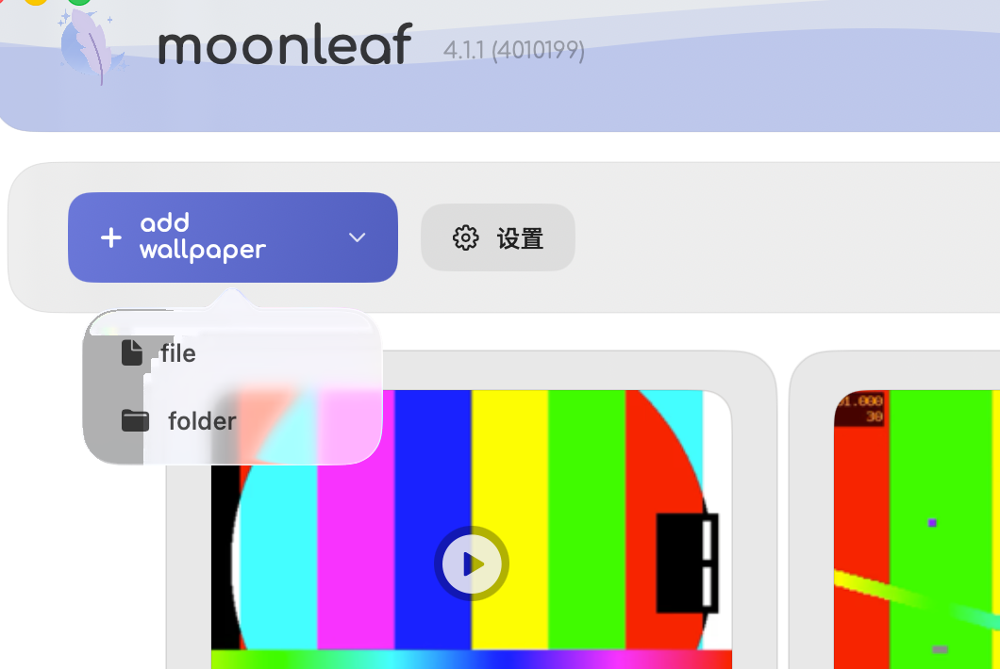
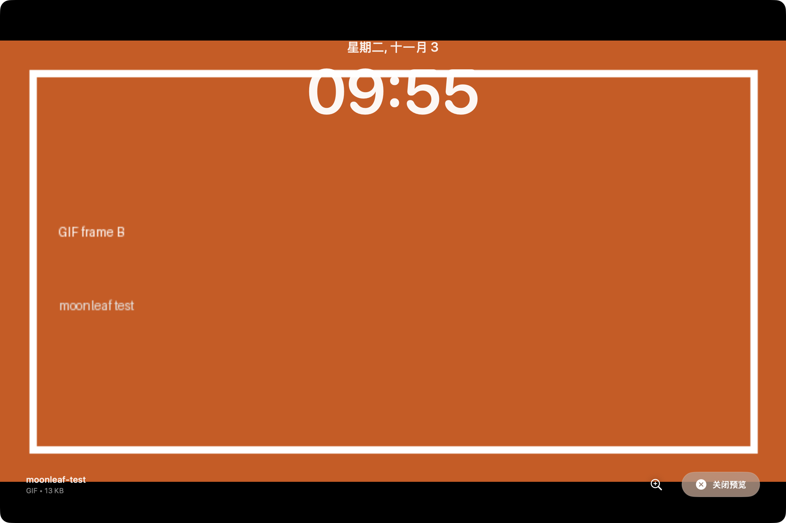
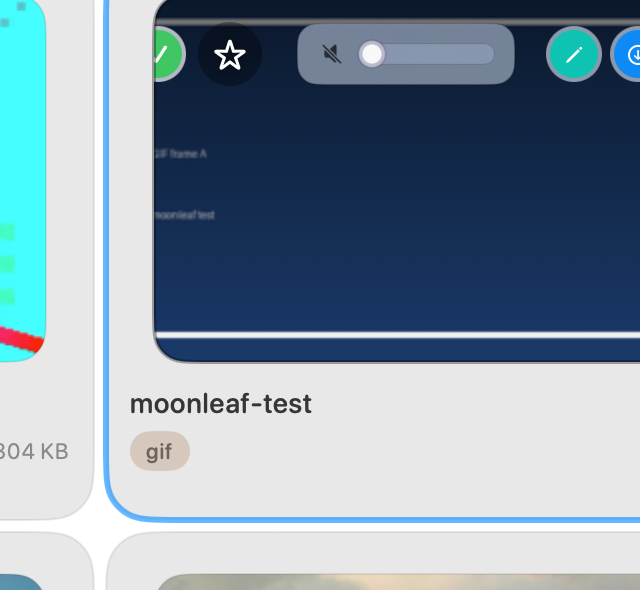

How to Set a GIF as Your Wallpaper on Mac (No Converting)
Quick Answer
Can you set a GIF as wallpaper on a Mac? Not with System Settings alone — macOS treats a GIF wallpaper as a still image and shows only its first frame. To make it move, you need an app that plays the animation on the desktop. Moonleaf is a free, open-source wallpaper manager that plays local animated GIFs directly on your desktop (it does not change the macOS lock screen), so you don't have to convert them to MP4 first.
Does it work on older or Intel Macs? The v4.2.0 release is a Universal binary (Intel and Apple Silicon). It requires macOS 12 or later; we tested it on macOS 26 Tahoe.
Disclosure: Moonleaf is our open-source app. We built it to offer a free, honest wallpaper manager without subscriptions or paywalls.Why macOS Shows a GIF Wallpaper as a Still Image
If you have ever dragged an animated GIF into System Settings → Wallpaper, you already know the frustration: the graphic appears on your screen, but it remains completely frozen.
According to Apple's official wallpaper documentation, macOS is designed to render desktop pictures as static bitmaps. The operating system's background daemon, WallpaperAgent, reads the file, decodes only frame index 0, and paints that single snapshot onto the desktop context.
The remaining frames are not played. System Settings can show Apple's own Aerial wallpapers, but it does not play a GIF file you choose.
What You Can Do with macOS Alone
Without installing third-party utilities, your built-in options are limited:
- Export a still frame: Open the GIF in Preview, select your favorite frame, and export it as a static PNG.
- Use Apple's Aerials: Choose one of Apple's pre-packaged dynamic wallpapers or slow-motion aerial videos.
Neither method will animate your own GIF. To bring an actual looping GIF to life on your desktop, you need a lightweight helper application that draws the frames directly onto the desktop layer.
Set a GIF as Wallpaper with Moonleaf (Free)
Moonleaf is a native, MIT-licensed wallpaper manager for macOS. It decodes and plays .gif files directly without converting them to video first.
1. Install Moonleaf
Install Moonleaf via Homebrew or direct download:
brew install shiquda/moonleaf/moonleaf
You can also download moonleaf.dmg from GitHub Releases. Official binaries are code-signed with an Apple Developer ID and notarized by Apple, allowing Gatekeeper to verify them cleanly on first launch.
2. Add Your GIF
Open Moonleaf from your Applications folder, or click its menu bar icon, choose Open Manager, and open Library in the sidebar. To import a local GIF:
- Click + add wallpaper in the top toolbar and select File… (or Folder… to import a directory).
- Alternatively, drag and drop any
.giffile from Finder directly into the Library grid.

3. Pick Your Display
Click on any wallpaper card to launch the Quick Preview overlay. You can see the animation looping in real time with an integrated clock preview before applying it.

To set the wallpaper:
- Hover over the card and click the magic wand icon (set wallpaper). (Or open the card's
…menu for Set on current desktop or Set on this display's desktops.) - On multi-monitor setups, select All or pick a specific screen index (1 or 2).
- The GIF begins playing immediately on your desktop (desktop only—your macOS lock screen stays unchanged).

4. Pause, Mute, and Control Playback
Control your live wallpaper from Overview or the Moonleaf menu bar icon:
- Pause / Resume (Overview): Click the pause button on a desktop card in Overview to freeze or resume playback anytime. Moonleaf also pauses overlays automatically when a Space is hidden or when Smart Playback (Settings → Playback) detects a fullscreen app.
- Volume / Mute Slider: GIF files are silent; when playing MP4 or MOV wallpapers, use the menu bar or active-card slider (drag to
0%to mute). - Shuffle Now: Instantly switch to another wallpaper in your library.
- Automatically start wallpaper on login: Keep your wallpaper running after reboot.
- Unset Live Wallpaper: Stop the overlay and revert back to your stock static macOS background with one click.
Different GIFs on Each Monitor or Each Desktop
Moonleaf supports multi-monitor setups natively. When you connect an external display, Moonleaf detects it and lets you assign different GIF or video wallpapers to each monitor independently, or synchronize the same wallpaper across all screens.
For virtual desktops (macOS Spaces), static images (.jpg, .jpeg, .png) and animated GIFs behave differently. Static wallpapers are natively isolated per Display × Space with startup recognition. Animated GIF and video wallpapers run through Moonleaf's Space-bound glasswp overlay engine at desktopWindow + 1 and automatically pause when a Space is hidden, though per-Space isolation for overlays has system-level Space-binding limits on recent macOS releases (such as macOS 26.7.1). If you want strictly different art per virtual Space on the same monitor, use static wallpapers or per-Space static playlists—see our Per-Monitor & Space Wallpaper Guide and Wallpaper Playlists Guide.
Native Per-Space Isolation
Each Display × Space keeps its own static wallpaper, auto-recognized on launch and shuffled per desktop.
Battery Life and Performance
An animated wallpaper does more work than a still picture. Moonleaf plays GIF frames with Core Animation. In our test on an M1 Pro running macOS 26.7.1, CPU stayed under 1% while an animated GIF was playing. That is one machine and one file. We did not measure battery life on other Macs.
Prefer a Video? MP4 and MOV Work Too
If your wallpaper is already in video format, you don't need a separate app. Moonleaf plays MP4 and MOV videos natively alongside GIFs, leveraging hardware-accelerated AVFoundation decoding.
See our complete guide: How to Set a Video as Wallpaper on Mac (Free, MP4 & MOV) →
Where to Find GIF Wallpapers
- Pixel Art & Lo-Fi Loops: Communities like
r/PixelArtandr/Cinemagraphsprovide beautiful seamless loops. - Giphy & Independent Creators: Search for looping animations, and always support artists on Ko-fi or Patreon.
- Built-In Wallhaven Browser: Moonleaf includes integrated browsing for Wallhaven, offering thousands of curated high-resolution static wallpapers.
Other Ways People Do It (and the Trade-Offs)
Prices and requirements below are from each project's own page, as of Nov 2026. Check their site before you rely on them. A cell is — when that page did not state the fact. We could not verify a Mac app named WallFlow, so it is not listed.
| Method | Price | Plays GIF files? | macOS, as stated by them | Source |
|---|---|---|---|---|
| Moonleaf | Free (MIT) | Yes. No converting step. | Requires macOS 12 or later. Tested here on macOS 26 Tahoe. Universal binary. | This site. It does not change the lock screen. |
| Convert the GIF to a video, then use a video wallpaper app | — | No. The GIF itself is not the wallpaper file. | — | We did not verify a specific converter app. |
| Plash | Free | No. It shows a website, not a GIF file. | The current direct download (2.17.2) requires macOS 26 or later. Older builds are listed for earlier macOS. | sindresorhus.com/plash, as of Nov 2026 |
| Vivid Walls | Free download, 3-day trial, then $9.99 once. | Their site says it reads GIF files, plus video, web, and images. | macOS 14.0 or later, Apple Silicon. | vividwalls.app, as of Nov 2026 |
| Backdrop | Free to try with up to 3 watermarked wallpapers. Then $1.99/month, $14.99/year, or $29.99 lifetime (US; see their store). | — | macOS 15 Sequoia or later, per their product FAQ. | cindori.com/backdrop, as of Nov 2026 |
Troubleshooting
1. GIF is not moving
Confirm that Moonleaf is running in your menu bar and your GIF is selected. Also check Overview to ensure the desktop is not paused, or exit fullscreen if Smart Playback is enabled. If Moonleaf is closed, macOS shows the native static wallpaper.
2. Gatekeeper prompt on first launch
Official releases are signed and notarized by Apple. If custom security policies flag the app, right-click moonleaf.app and choose Open, or run:
xattr -dr com.apple.quarantine /Applications/moonleaf.app3. Wallpaper resets after reboot
Click the Moonleaf menu bar icon and ensure Automatically start wallpaper on login is enabled.
Frequently Asked Questions
Can you set a GIF as your wallpaper on Mac without third-party apps?
No. macOS System Settings parses GIF files as static images and displays only the first frame. A dedicated wallpaper manager like Moonleaf is required to animate the loop.
Do I need to convert my GIF to an MP4 first?
No. Moonleaf decodes and plays raw .gif files natively. You do not need to convert them to video.
Does Moonleaf work on Intel Macs?
The v4.2.0 release is a Universal binary (Intel and Apple Silicon). It requires macOS 12 or later. We tested it on macOS 26 Tahoe.
Can I set different wallpapers on multiple monitors?
Yes. Moonleaf detects all connected displays and allows independent wallpaper assignment per monitor.
Does an animated GIF wallpaper drain laptop battery?
In our test on an M1 Pro running macOS 26.7.1, CPU stayed under 1% while an animated GIF was playing. That is one machine and one file, not a battery claim for every Mac.
Does the GIF wallpaper appear on the lock screen?
No. moonleaf animates the desktop only; it doesn't change the lock screen.